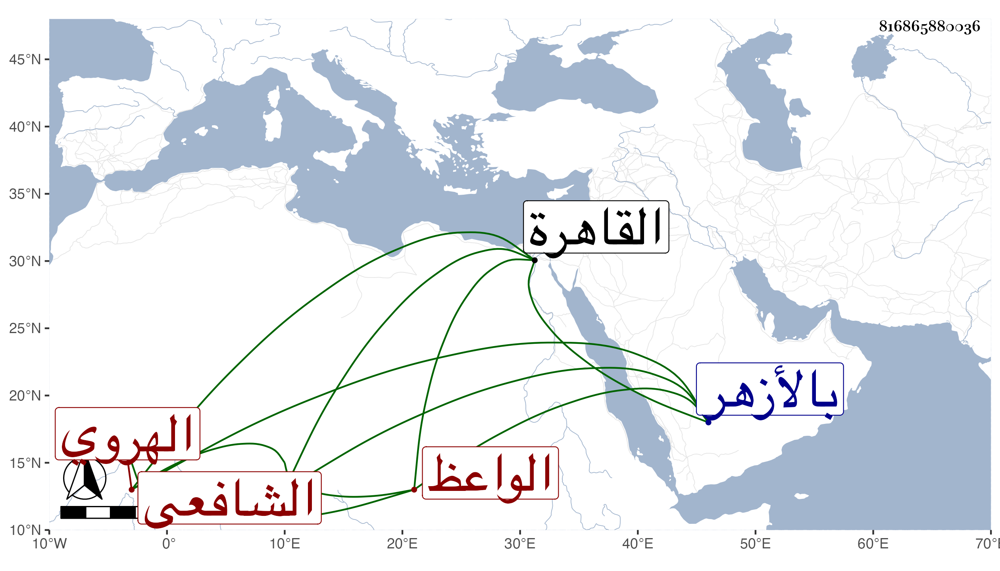

0902Sakhawi.DawLamic.ITO20230111-ara1.EIS1600.816865880036
Biography ID: 816865880036
290
أحمد بن محمد بن أحمد القطب ويدعى أيضا الشهاب بن اختيار الدين ابن فخر الدين الردي الأصل الهروي المولد والدار الشافعي الواعظ نزيل بلد الخليل . ولد في جمادى الآخرة سنة تسع وعشرين وثمانمائة بجوخا بجيم مفتوحة ثم واو بعدها معجمة من أعمال طبس الكيلكي ممن حج وطاف البلاد ووعظ في كلها وتكرر قدومه القاهرة وعقد حين جاء مستفتيا فيما عارضه فيه البقاعي المجلس بالأزهر وأخذ حينئذ عني وكتبت له إجازة متضمنة للجواب عن مسألته وسمعته يقول :
| يا عين كوني بالقليل قنوعة | فيا طول ما جاك الكثير وراح |
